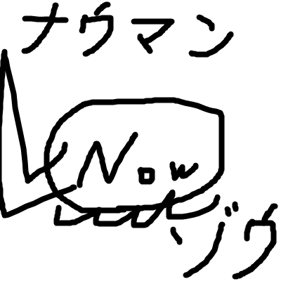

主に競技プログラミングと、自作曲の作成、クラシック曲のMIDI打ち込みをやっているサイトです。
ちょっと前まで色々私についてこのサイトで語っていたのですが、不健全になってきたのでやめました。 github からサイトのURLが参照できます。

私は tinumu というハンドルネームでやってます。2000年生まれです。23歳です。
活動は2013年くらいの頃からやってて、Youtubeとかに動画投稿することなどしてました。
高校時代にプログラミングの勉強をして競技プログラミングをやっていました。
2020年くらいに競技プログラミングから離れ、ちょくちょく自作曲の投稿をしたり、クラシック曲(主にラヴェルの楽曲)の
MIDI打ち込みなどをやっていたのですが、最近はYoutubeもTwitterもうまく使えなく、アカウントを転々としながら
動画を作っては消し作っては消しとよくわからないことをしていました。
現在は職もなく人間関係も存在も完全に消えましたが、この時間を利用して何らか自己研鑽ができればいいと思っています。
背景色 : 千歳茶 せんさいちゃ (#494a41) 参照 : 和色大辞典